Biography个人简介
I am an LLM Researcher at Sea Group, Shopee LLM Team. I received my Ph.D. in Computer Science from Nankai University, jointly trained with Nanyang Technological University, Singapore, as a member of the Nankai-Baidu Joint Lab (NBJL). I was previously a research intern at Microsoft Research Asia, working on time-series LLMs. My research interests include Code LLMs & Agents, AI for Data Compression, and High-Performance Computing, with 30 publications at venues including KDD, AAAI, WWW, ACL, CVPR and Bioinformatics. Most of my tools are open-sourced on GitHub. Please feel free to reach out if you are interested in my research.
我是 Sea 集团 Shopee LLM 团队 的大模型研究员。博士毕业于南开大学计算机科学专业，期间在新加坡南洋理工大学联合培养，是南开-百度联合实验室（NBJL）成员。此前曾在微软亚洲研究院实习，从事时间序列大模型研究。我的研究方向包括 Code LLM 与智能体、AI 数据压缩和高性能计算，已在 KDD、AAAI、WWW、ACL、CVPR 和 Bioinformatics 等会议与期刊发表论文 30 篇。我的大部分工具已在 GitHub 开源，欢迎对我的研究感兴趣的朋友联系交流。
News新闻动态
- 🎤 Invited talk at Asian Transplantation Week (ATW) 2026, Busan, Korea.🎤 受邀在 2026 亚洲移植周（ATW，韩国釜山）作特邀报告。Upcoming即将进行
- 💼 Joined Sea Group as an LLM Researcher in the Shopee LLM Team, Beijing.💼 加入 Sea 集团 Shopee LLM 团队（北京），任大模型研究员。
- 🎉 Two papers are accepted by ACL 2026 (including 1 Oral).🎉 两篇论文被 ACL 2026 录用（其中 1 篇 Oral）。
- 🎉 One paper is accepted by CVPR 2026.🎉 一篇论文被 CVPR 2026 录用。
- 📄 ChatAD (work done at MSRA) is released on arXiv.📄 ChatAD（微软亚洲研究院实习期间工作）在 arXiv 发布。
- 💼 Joined Microsoft Research Asia as a research intern.💼 加入微软亚洲研究院任研究实习生。
- 🎉 PMKLC is accepted by SIGKDD 2025 (Oral).🎉 PMKLC 被 SIGKDD 2025 录用（Oral）。
Publications发表论文
-
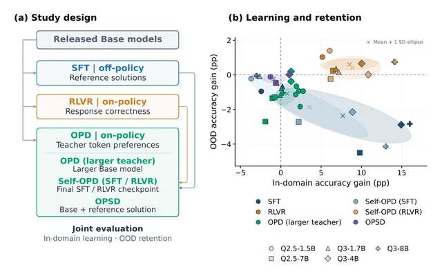
OPDArena: Understanding Learning and Forgetting in On-Policy DistillationarXiv 2026Tech Report -
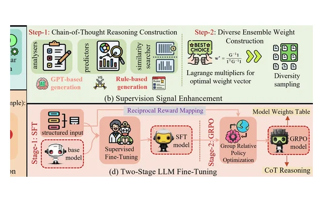
REATS: LLM Reasoning-based Ensemble Learning for Adaptive Time Series ForecastingarXiv 2026Tech Report -
LLCBench: Benchmarking Lossless Compression of Large Language Models
-
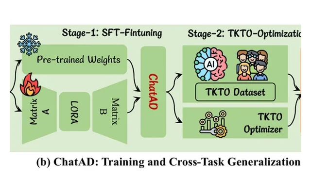
ChatAD: Reasoning-Enhanced Time-Series Anomaly Detection with Multi-Turn Instruction EvolutionarXiv 2026Tech Report -
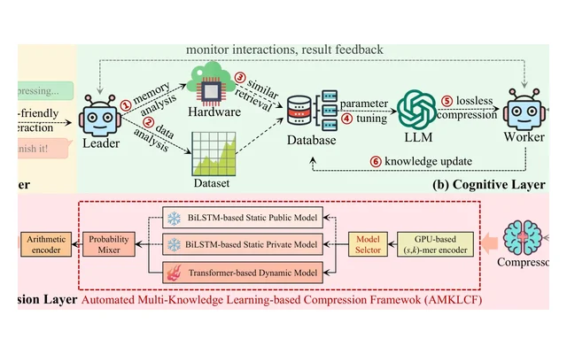
AgentGC: Evolutionary Learning-based Lossless Compression for Genomics Data with LLM-driven Multiple AgentACL 2026CCF-A -
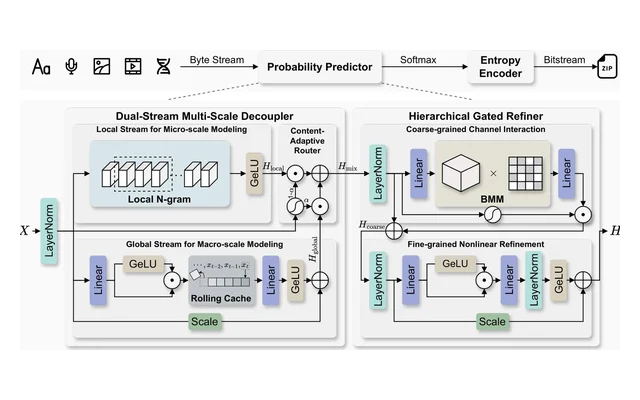
-
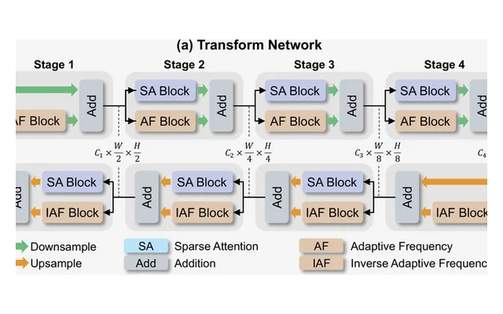
-
Geometric Structure-Aware Diffusion Model with Self-Optimization Strategy for Molecular GenerationJCTC 2026
-
End-to-End Story Visualization Framework with Penalty-Based Evaluation using Vision-Language ModelsICASSP 2026CCF-B
-
Artificial Intelligence-Driven Non-Targeted Screening: Applications and Prospects in Environmental and Food SciencesTIFS 2026
-
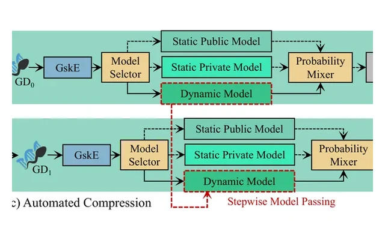
-
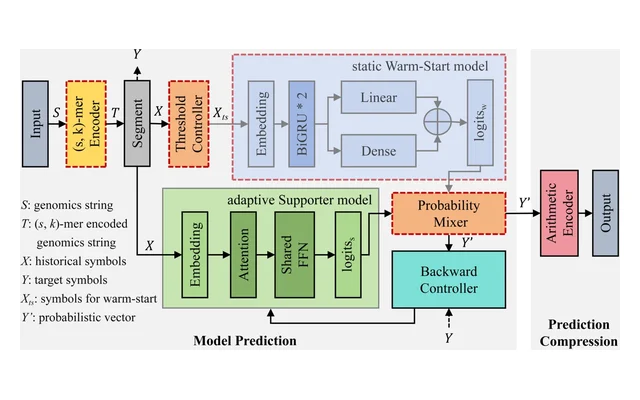
-
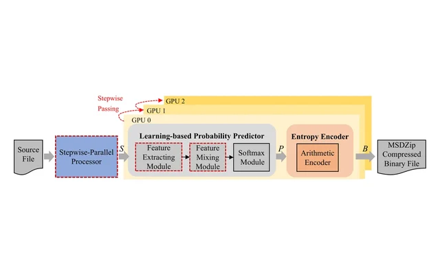
-
Adaptive Lossless Compression for Genomics Data by Multiple (s,k)-mer Encoding and xLSTM
-
Multi-source Data Lossless Compression via Parallel Expansion Mapping and xLSTM
-
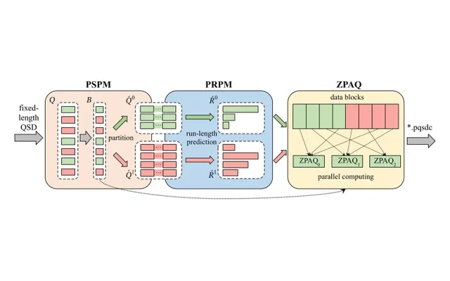
-
A Survey and Benchmark Evaluation for Neural-Network-Based Lossless Universal Compressors Toward Multi-Source Data
-
LRCB: A Comprehensive Benchmark Evaluation of Reference-free Lossless Compression Tools for Genomics Sequencing Long Reads Data
-
融合聚类和卷积神经网络的原理图美观度评价算法华中科技大学学报 2024EI
-
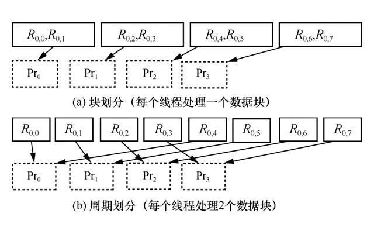
高错误率长序列基因组数据敏感序列识别并行算法通信学报 2023CCF-A（中文） -
SR2C: A Structurally Redundant Short Reads Collapser for Optimizing DNA Data Compression
-
PMFFRC: A Large-Scale Genomic Short Reads Compression Optimizer via Memory Modeling and Redundant ClusteringBMC Bioinformatics 2023CCF-CJCR Q1
-
融合过滤和相似度计算的高错误率基因组数据敏感序列识别小型微型计算机系统 2022CCF-B（中文）
-
Prosumer Full Lifecycle Sustainable Footprint Painting for Circular Economy and Community-based Virtual Power Plant: A Multi-objective Optimization ResearchPSEP 2025
-
Eco-Energetical Analysis of Circular Economy and Community-based Virtual Power Plants (CE-cVPP)Applied Energy 2024JCR Q1
-
The Integration of Supercritical and Reheating Rankine Cycles in Advanced Thermal Energy Systems for Extreme Weather AdaptationICAE 2024
-
ricME: Long-Read Based Mobile Element Variant Detection Using Sequence Realignment and Identity Calculation
-
Wireless Energy: Paving the Way for Smart Cities and a Greener FutureEnergy and Buildings 2023JCR Q1
-
多维度评价科技工作责任主体信用模型与算法广西大学学报 2021CSCD
-
COVID-19 Epidemic Situation, the Outbreak Peak and Cycle Centered on China's No-Drug Control Actions: A Modeling StudySSRN 2020


† equal contribution · * corresponding author† 共同第一作者 · * 通讯作者
No papers in this category yet.该分类下暂无论文。
Invited Talks特邀报告
TSS Concurrent Symposium 7 (Kidney) — Foundation Models and Clinical Intelligence in Transplantation
Nov 14, 2026 · BEXCO, Busan, Korea 特邀讲者 · 2026 亚洲移植周（ATW）暨亚洲移植科学研讨会（TSS）
TSS 分会场 7（肾脏）— 移植领域的基础模型与临床智能
2026 年 11 月 14 日 · 韩国釜山 BEXCO 会展中心
Professional Activities学术服务
Reviewer for Conferences会议审稿人
- AAAI Conference on Artificial Intelligence (AAAI), 2024, 2025, 2026
- ACM SIGKDD Conference on Knowledge Discovery and Data Mining (SIGKDD), 2025, 2026
- The Web Conference (WWW), 2025
- IEEE International Conference on Acoustics, Speech, and Signal Processing (ICASSP), 2025
- International Joint Conference on Neural Networks (IJCNN), 2025
Honors & Awards荣誉奖项
Competitions学科竞赛奖励
- 2026 · 3rd "Huawei Cup" National College Student Storage Modeling Competition, Team Leader — Second Prize“华为杯”第三届全国大学生存储建模比赛（队长）— 二等奖
- 2025 · Computer Achievement Award of Guangxi Zhuang Autonomous Region, Main Contributor — Second Prize广西壮族自治区计算机成果奖（主要参与）— 二等奖
- 2024 · 11th National Parallel Application Challenge, Team Leader — National Second Prize第十一届全国并行应用挑战赛（队长）— 全国二等奖
- 2024 · Tianjin "Challenge Cup" Innovation and Entrepreneurship Plan, Technical Director — Gold Prize天津市“挑战杯”创新创业计划（技术总监）— 金奖
- 2024 · Nankai University "President's Cup" Innovation and Entrepreneurship Competition, Technical Director — First Prize南开大学“校长杯”创新创业大赛（技术总监）— 一等奖
- 2023 · "Huawei Cup" National College Student Storage Modeling Competition, Team Leader — Second Prize“华为杯”全国大学生存储建模比赛（队长）— 二等奖
- 2020 · 8th National Parallel Application Challenge "Intel Cup", Team Leader — Parallel Fund Award (National Top 9)“英特尔杯”第八届全国并行应用挑战赛（队长）— 并行基金奖（全国 9 强）
- 2020 · Guangxi College Student Computer Design Competition, Team Leader — Third Prize广西大学生计算机设计大赛（队长）— 三等奖
- 2019 · Guangxi Computer Society Outstanding Conference Paper, First Author — First Prize广西计算机学会优秀会议论文（第一作者）— 一等奖
- 2017 · "Shuchuang Cup" National College Student Mathematical Modeling Competition, Team Leader — First Prize“数创杯”全国大学生数学建模比赛（队长）— 一等奖
Honors & Scholarships荣誉表彰
- 2026 · Outstanding Doctoral Graduate, Nankai University南开大学优秀博士毕业生
- 2025–26 · Stars of Tomorrow Intern, Microsoft Research Asia微软亚洲研究院明日之星实习生（Stars of Tomorrow）
- 2024–25 · CSC Government-Sponsored Study Abroad Scholarship, China Scholarship CouncilCSC 国家公派留学奖学金，国家留学基金管理委员会
- 2024–25 · National Scholarship for Doctoral Students, Ministry of Education & Ministry of Finance博士研究生国家奖学金，教育部和财政部
- 2023–25 · First Prize of "GongNeng" Scholarship for Doctoral Students, Nankai University (twice)南开大学博士研究生“公能”奖学金一等奖（两次）
- 2021–22 · Outstanding Graduate, Guangxi University广西大学优秀研究生毕业生
- 2020–21 · Annual Outstanding Student Scholarship, Guangxi University广西大学年度优秀学生奖学金
- 2020–22 · First Prize Graduate Scholarship, Guangxi University (twice)广西大学研究生奖学金一等奖（两次）
- 2019–20 · Outstanding Student Cadre, Guangxi University广西大学优秀学生干部
- 2017–18 · National Inspirational Scholarship, China University of Mining and Technology国家励志奖学金，中国矿业大学
Patents & Software Copyrights发明专利与软件著作权
- Method for Evaluating the Aesthetics Level of Circuit Layout, Routing, and Schematic Diagram · CN117058096A · 2023 · 1st student inventor一种电路布局布线原理图美观度等级评价方法 · CN117058096A · 2023 · 学生第一发明人
- A Heuristic Layout and Routing Method for Circuit Schematic Diagrams · CN117057302A · 2023 · 1st student inventor一种电路原理图启发式布局布线方法 · CN117057302A · 2023 · 学生第一发明人
- A Non-Intrusive Identification Method for Multi-Parameter Identification of Electromagnetic Equipment Based on Ensemble Algorithms · CN113723495A · 2023 · 2nd student inventor一种基于集成算法的电磁装备多参数非侵入式辨识方法、系统、设备及存储介质 · CN113723495A · 2023 · 学生第二发明人
- A Parallel Optimization Method for High-Throughput Genomics Sequencing Reads Data Compression · CN117059181A · 2022 · 1st student inventor一种高通量基因组序列数据压缩并行优化方法 · CN117059181A · 2022 · 学生第一发明人
- A Parallel Compression Method for High-Throughput Genomic Sequencing Quality Score Data · CN117133365A · 2022 · 1st student inventor一种高通量基因组测序质量得分数据并行压缩方法 · CN117133365A · 2022 · 学生第一发明人
- Software copyrights: Research Integrity Evaluation Software System (2nd), DNA Sensitive Sequence Filtering Software (1st), Improved RC4 Cryptography Auxiliary Teaching Platform (1st)软件著作权：科研诚信评价软件系统（第二）、DNA 敏感序列过滤软件（第一）、改进 RC4 密码辅助教学平台（第一）